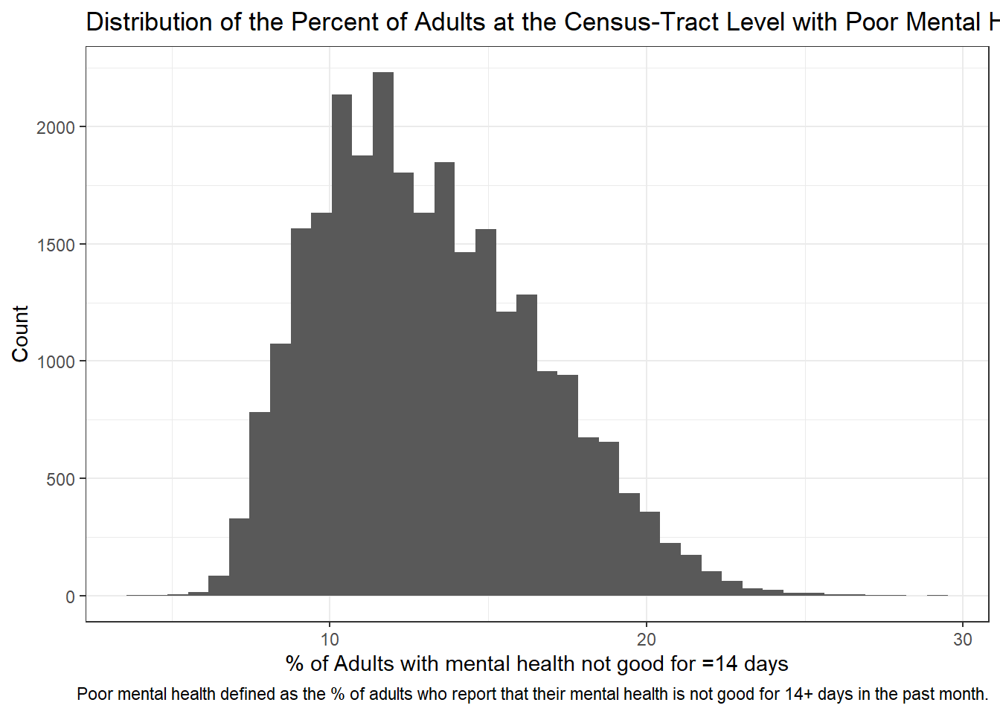
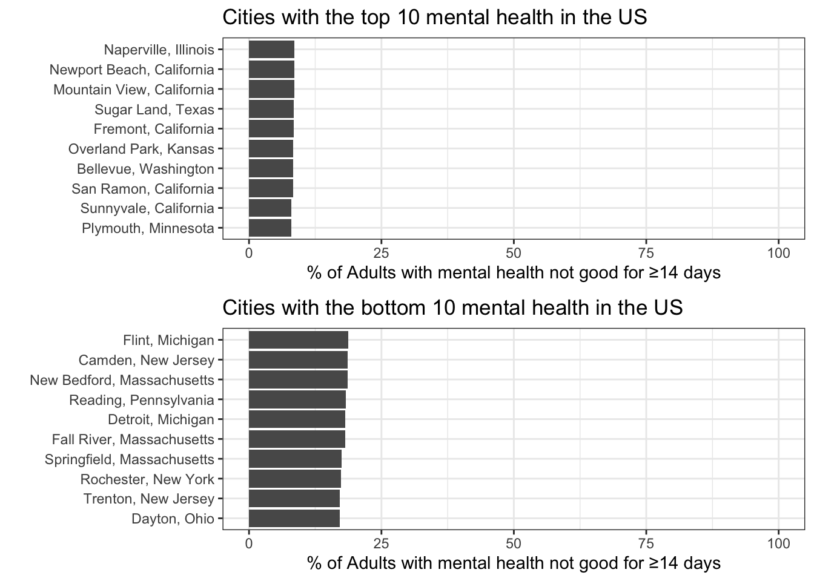

The World Health Organization (WHO), defines mental health as “a state of well-being in which the individual realizes his or her own abilities, can cope with the normal stresses of life, can work productively and fruitfully, and is able to make a contribution to his or her community.” This definition demonstrates how mental health is an important aspect of overall wellness. Mental illness, however, is one of the most common medical statuses in the United States. In 2017 alone, 46.6 million Americans live with a mental illness, accounting for approximately 20% of the U.S. population. And, more than 10 million (4.6%) American adults had a serious mental illness which substantially interferes with or limit one or more major life activities. Geographic variation in mental health has drawn attention in the health care community. In a recent report, most of the best cities for mental health are located in the West or Midwest, and none are located in the Northeast. Mental health and many common mental disorders are shaped to a great extent by the social, economic, and physical environments in which people live. Factors that potentially contribute to the variation are not well understood and need further study. With this project we wanted to better understand what behaviors are positively associated with mental health and the distribution of rates of mental health in the United States.
This project utilizes data from the 500 cities dataset, publicly available for download here. The data are based on the Behavioral Risk Factor Surveillance System (BRFSS) survey, which is a national survey of adults’ behavior surrounding their health (risk behavior, use of preventative services, chronic conditions). Data are summarized using small area estimation methods and are not reported on the individual level, but at the census-tract level and include geographic identifiers such as latitude and longitude, city Federal Information Processing Standards (FIPS) and census tract FIPS.
The 500 cities data source includes data on health outcomes such as asthma, arthritis, cancer, heart disease, and mental health, along with data on unhealthy behaviors such as drinking, smoking, and obesity.
We started by looking at the distribution of mental health across all census districts in the US and averaged the percent of adults with poor mental health for 14 of the past 30 days across all census tracts within a city. We can see that the data are skewed slightly, but that the average percent of adults with poor mental health was 13.1% (standard deviation 3.41%).

We were also interested in which cities have the highest and lowest mental health, unadjusted for other factors. We can see that overall, there isn’t a large difference between cities with the best and worst mental health; all cities had fewer than 25% of adults reporting poor mental health in the past month. Among the top 10 in both directions, cities were fairly close to each other with respect to the percentage of adults with poor mental health.

Looking at the distribution of the data at the census-tract level, the % of adults with poor mental health for 14+ days out of the last 30 is slightly skewed. Due to the large sample size we will proceed with a linear model and ignore the slight skeweness in the data.
The linear model was adjusted for factors identified a priori; a model-building process was not employed. Factors included the percent of adults without leisure-time physical activity, percent of adults that were current smokers, the percent of adults without health insurance (all from the 500 cities dataset) in addition to the percent male, with less than high school education, and white (from the American Community Survey data). The model is clustered at the city level, accounting for repeated measures at the census tract level within each city.
We can see that a higher percentage of adults without physical activity is associated with better mental health. Smoking and lack health insurance were associated with poorer mental health. A higher percentage of men, white adults, and adults with less than a high school education were associated with a lower percentage of adults with poorer mental health.
| term | estimate | std.error | p.value |
|---|---|---|---|
| (Intercept) | 5.036 | 0.086 | <0.001 |
| % Without physicial activity | -0.051 | 0.002 | <0.001 |
| % Current smokers | 0.503 | 0.002 | <0.001 |
| % Without health insurance | 0.158 | 0.002 | <0.001 |
| % Male | -0.042 | 0.001 | <0.001 |
| % With less than high school education | -0.010 | 0.001 | <0.001 |
| % White | 0.000 | 0.000 | 0.414 |
From the adjusted model, below are the cities with the best and worst mental health.
| category | city_state | Predicted % adults with poor mental health |
|---|---|---|
| Worst predicted mental health | Flint, MI | 18.71 |
| Worst predicted mental health | Camden, NJ | 18.56 |
| Worst predicted mental health | New Bedford, MA | 18.55 |
| Worst predicted mental health | Reading, PA | 18.30 |
| Worst predicted mental health | Detroit, MI | 18.19 |
| Worst predicted mental health | Fall River, MA | 18.11 |
| Worst predicted mental health | Springfield, MA | 17.51 |
| Worst predicted mental health | Rochester, NY | 17.35 |
| Worst predicted mental health | Trenton, NJ | 17.18 |
| Worst predicted mental health | Dayton, OH | 17.11 |
| Best predicted mental health | Plymouth, MN | 8.01 |
| Best predicted mental health | Sunnyvale, CA | 8.03 |
| Best predicted mental health | San Ramon, CA | 8.27 |
| Best predicted mental health | Bellevue, WA | 8.31 |
| Best predicted mental health | Overland Park, KS | 8.37 |
| Best predicted mental health | Fremont, CA | 8.43 |
| Best predicted mental health | Mountain View, CA | 8.49 |
| Best predicted mental health | Sugar Land, TX | 8.51 |
| Best predicted mental health | Newport Beach, CA | 8.51 |
| Best predicted mental health | Naperville, IL | 8.57 |